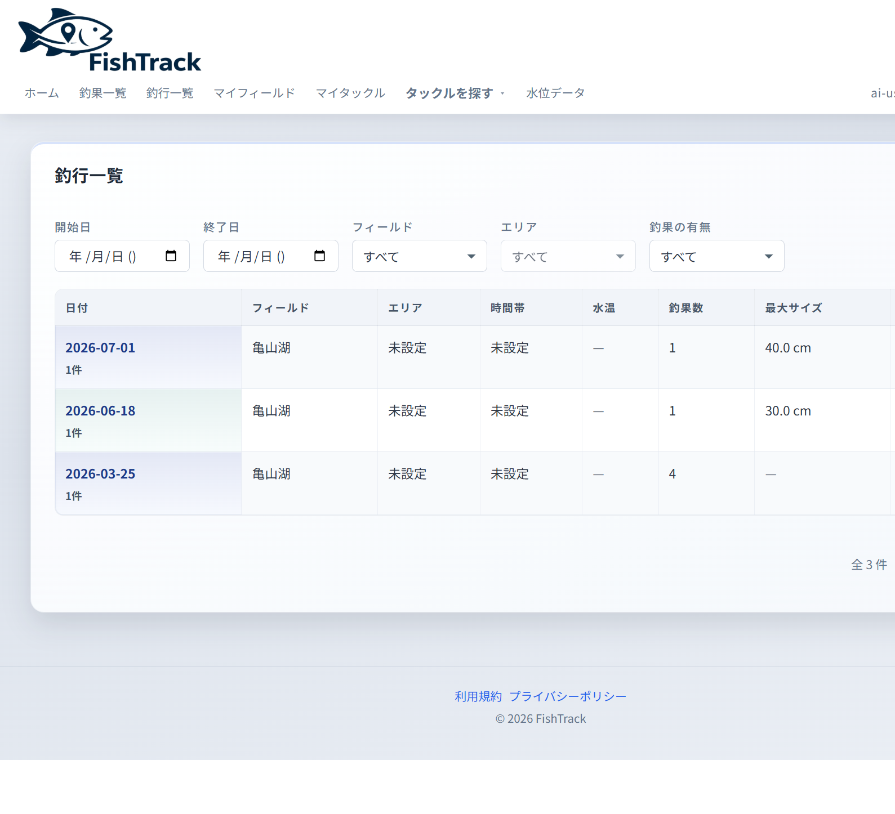
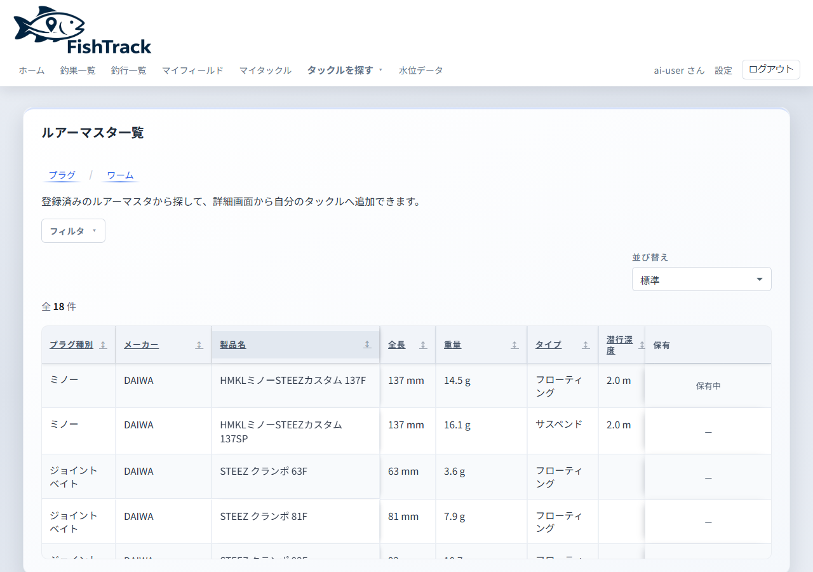

現場、その日の釣果を残す
釣果と写真、時間と場所。スマホからでも入力しやすい導線で、その日の記録を逃さず残せます。使うにはアカウント登録が必要です。

採用後の想定。宣伝分量は案Aと同じ。下の変更後はヒーローを分割、釣行前は全幅画面、現場と帰宅後は大きさの違う2枠、できることは画面つきの不揃いグリッド。等幅カードと左右交互3段は使わない。
変更前（現状）

行き先のフィールドや水位を、これまでの釣行記録と照らし合わせて確認できます。

無料枠は広告表示あり。登録後、メールアドレスの確認を完了するとご利用いただけます。
変更後

行き先の水位と、これまでの釣行記録を照らし合わせて、行く前の判断に使えます。

釣果と写真、時間と場所。スマホからでも入力しやすい導線で、その日の記録を逃さず残せます。使うにはアカウント登録が必要です。
その日の釣行を1件にまとめ、フィールドや日付で見返します。公開タイムラインではありません。

登録しなくても、ここで機能の範囲が分かります。使うにはアカウントが必要です。
ロッド・リール・ルアーの所持を残し、釣果と結び付けられる。

マスタから型番を探して、所持に追加できる。

写真・サイズ・フィールド・時刻を1件ずつ残す。
その日の釣行として記録をまとめ、帰宅後に一覧で振り返る。
よく行くフィールドの水位を見て、行く前の判断に使う。
よく行く場所をマイフィールドに残し、釣果と紐づける。
無料で新規登録。無料枠は広告表示あり。
確認が完了すると、記録を残せるようになります。
写真を先に追加すると、日時や場所の入力がしやすいです。